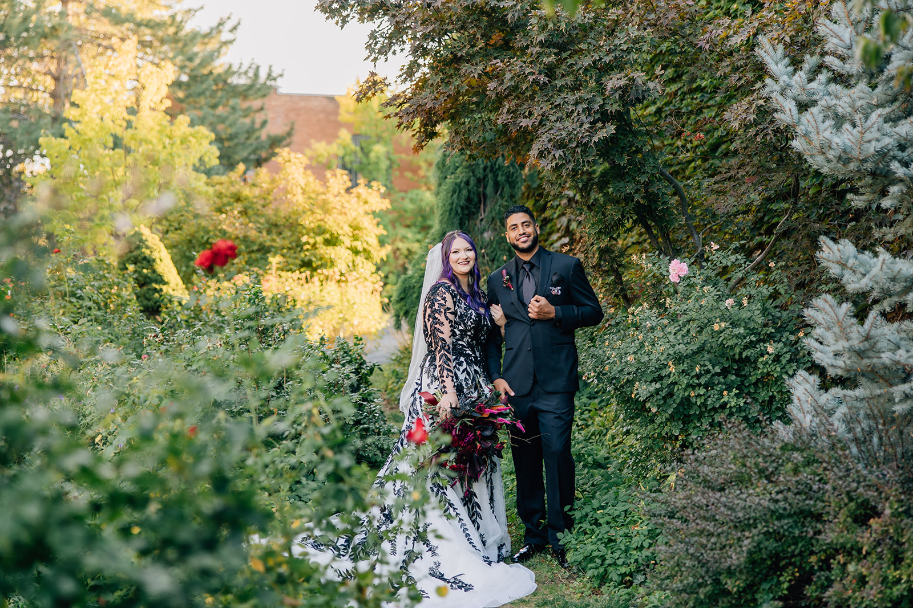

Hi there! My name is Jaden Burks.
I am a 26 year old woman, born and raised in Utah. I have been married to my husband, Ryan Burks, 2 years this October 2024. I currently work for The Home Depot for their Business Systems Analytics department, My Linked in Profile . I am currently working towards my bachelors in Computer Science.

When it comes to my family, it gets very complicated. This is because my mom and dad are divorced (have been since I was 5), and they are both remarried. On my moms direct side alone I have around 28 cousins, and then on my step-moms side I have a very large extended family. That doesnt include my husbands side, where he has close to 20 cousins as well. With this in mind I have put in a table of my most immediate family, with their relation to me, and what side they are on.
| Family Members Name | How they are related to Jaden | Side of the family |
|---|---|---|
| Ryan Burks | Spouse | N/a |
| Brian Lockwood | Father | Father |
| Cassandra Reyes | Mother | Mother |
| Tiffany Lockwood | Step-Mother | Father |
| Jacob Reyes | Step-Father | Mother |
| Kate Lynn Lockwood | Sister | All |
| Jasey Faith Mckissen | Step-Sister | Father |
| Gabriel Reyes | Step-Brother | Mother |
| Lillian Burks | Mother-in-Law | Spouse |
| Isaac Burks | Father-in-Law | Spouse |
| Jeremy Burks | Brother-in-Law | Spouse |
| Neil Burks | Brother-in-Law | Spouse |